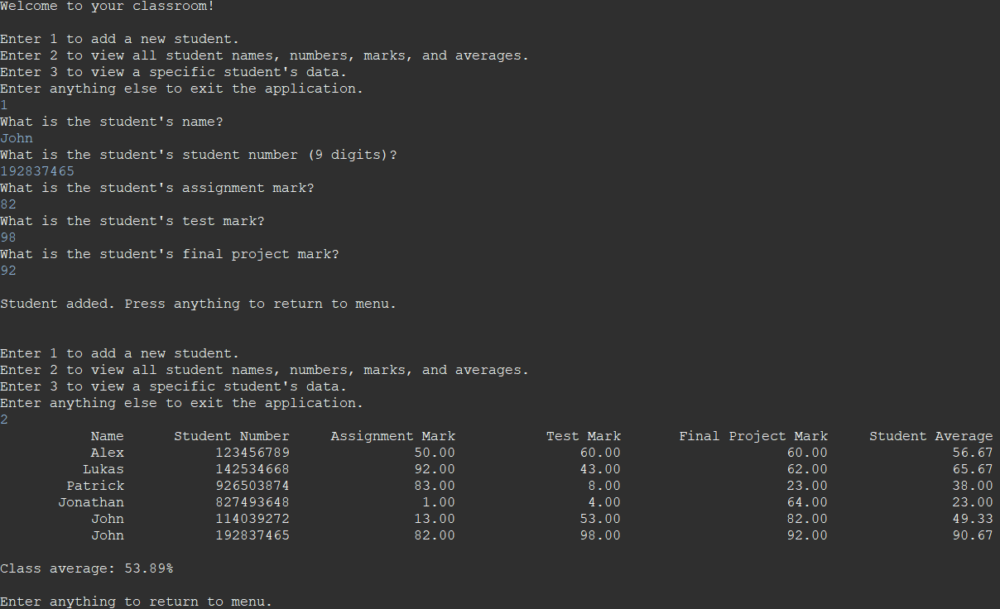

Arraylists are an object from java.util and it is, just like their name, an array-like list. Just like an array, it can only hold one specific data type, but different from an array, it can only hold objects and not primitive data types. This means data types such as int and double will be stored as its wrapper class, Integer and Double, where the ArrayList will do this step automatically, which is called autoboxing. The reverse process is called autounboxing, which also happens automatically.
To initialize an ArrayList object, you have to give its element types, and when declaring, you need the element type and can include the ArrayList length. In the following example code, an ArrayList of length 10 markList is holding the type Integer.
import java.util.ArrayList; ArrayList<Integer> markList = new ArrayList<Integer>(10);
Some common methods for ArrayLists are the following:
//Returns the length of the ArrayList as an int ArrayList.size(); //Returns a boolean, whether or not all of the contents of the ArrayList is empty ArrayList.isEmpty(); //Adds the object parameter to the end of the ArrayList, returns a boolean ArrayList.add( E obj); //Adds the object parameter at the index of the ArrayList, and moves all other elements to one index to the right //i must be between 0 and size() ArrayList.add(int i, E obj); //Sets the element at the index i to the parameter passed, i is between 0 and size()-1, returns the previous value at the index i ArrayList.set(int i, E obj); //Return the object at the index i, i is between 0 and size()-1 ArrayList.get(int i); //Remove the element at index i, return the element that was removed, i is between 0 and size()-1 ArrayList.remove(int i); //Check if the parameter is contained in the ArrayList, and return if it’s found ArrayList.contains(E obj); //Returns the index of the parameter in the ArrayList, if it’s not found, return -1 ArrayList.indexOf(E obj);
Example
We used Arraylists to create a classroom representation. In this classroom, the user has the option to view all student’s marks, and a specific student’s marks and add new students. The students have three scores, a test, an assignment and a final project. The ArrayList was used to store the student objects in the class.
 The user interface for adding a new student and viewing the classTo view the full code, go to the resources page